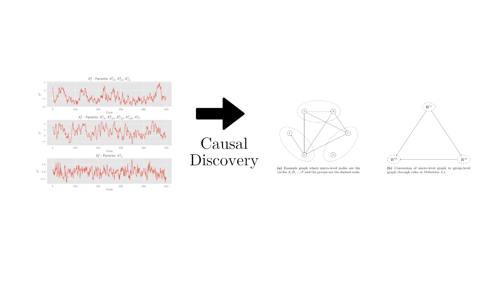
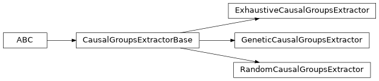

Welcome to Causal Inference for Time Series Analysis documentation!
{kind=link}
Causal Discovery Class Diagram
![Inheritance diagram of causal_discovery_algorithms.CausalDiscoveryBase, causal_discovery_algorithms.GrangerWrapper, causal_discovery_algorithms.VARLINGAMWrapper, causal_discovery_algorithms.DynotearsWrapper, causal_discovery_algorithms.PCStableWrapper, causal_discovery_algorithms.PCMCIWrapper, causal_discovery_algorithms.LPCMCIWrapper, group_causal_discovery.GroupCausalDiscoveryBase, group_causal_discovery.MicroLevelGroupCausalDiscovery, group_causal_discovery.DimensionReductionGroupCausalDiscovery, group_causal_discovery.HybridGroupCausalDiscovery](_images/inheritance-2936b1584113ecd3e7f0fc8929d82bb1a4d83273.png)
ABC stands for Abstract Base Class
Group Extraction Class Diagram

ABC stands for Abstract Base Class
Contents:
- causal_discovery_algorithms package
- causal_discovery_algorithms.causal_discovery_base module
- causal_discovery_algorithms.causal_discovery_causalai module
- causal_discovery_algorithms.causal_discovery_causalnex module
- causal_discovery_algorithms.causal_discovery_custom module
- causal_discovery_algorithms.causal_discovery_tigramite module
- causal_discovery_algorithms.modified_pcmci module
- Module contents
- causal_groups_extraction package
- causal_groups_extraction.causal_groups_extraction module
- causal_groups_extraction.exhaustive_causal_groups_extraction module
- causal_groups_extraction.genetic_causal_groups_extraction module
- causal_groups_extraction.random_causal_groups_extraction module
- causal_groups_extraction.stat_utils module
- Module contents
- group_causal_discovery package
- benchmark module
- create_toy_datasets module
- Examples of Benchmarks Usage